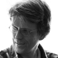
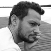

|
Гаянэ Багдасарян
Как шрифтовой дизайнер начала работать в компании ПараТайп в 1996 году. Кириллические адаптации Гаянэ находятся в шрифтовых библиотеках ведущих словолитен мира: ParaType, Typotheque, Linotype, Bitstream, The Font Bureau, ITC, Berthold и Emigre. В 2012 году организовала шрифтовую студию Brownfox, сфокусировавшись на разработке современных оригинальных латинских и кириллических шрифтов с широким спектром применения. В 2012 году организовала и наладила работу ежегодной шрифтовой конференции Серебро Набора. Член редколлегии журнала Шрифт. Лауреат международных шрифтовых конкурсов Кириллица’99, TDC² 2000 и Granshan 2013. |
 |
Фредерик Берлаен
Дизайнер шрифта и программист. Автор перспективного шрифтового редактора RoboFont и один из создателей формата UFO. |
|  | Эрик ван Блокланд
Один из разработчиков Robofab и UFO, дизайнер шрифта, программист и преподаватель курса TypeMedia Королевской академии искусств в Гааге. |
 |
Лоренц Брунер
Родился в Цюрихе, живёт и работает в Берлине. Руководит студией, специализирующейся на разработке айдентики, коммуникационного дизайна, дизайна периодических изданий и эксклюзивных шрифтов. Студия работает с заказчиками со всего мира и разных областей культуры. Лоренц — член швейцарской словолитни Lineto, в 2004 году опубликовавшей его шрифт Akkurat, а в 2013 Circular. Он преподаёт графический дизайн в амстердамской Академии Геррита Ритвельда и был приглашённым критиком в ряде ведущих институтов искусств и дизайна, включая Йельский университет искусств в Нью Хавене, Werkplaats Typographie в Арнеме и Школе искусств и дизайна в Лозанне (ECAL). Работы Брунера были опубликованы во многих книгах и изданиях, включая журнал IDEA (Токио), AA Publications (Лондон), Phaidon Press (Лондон) и журнал The New York Times. Он был дважды награждён швейцарской государственной премией по дизайну и и его работы были неоднократно отмечены на конкурсах The Most Beautiful Swiss Books и The Best Dutch Book Designs. |
 |
Лукас де Гроот
Голландский шрифтовой дизайнер, ныне работающий в Берлине. Среди его заказчиков — газеты Folha de S.Paulo, Le Monde, Metro и Der Spiegel, международные компании Sun Microsystems, Bell South, Heineken, Siemens и Miele. Лукас разработал две гарнитуры для Microsoft: моноширинный шрифт Consolas — новую альтернативу Курьеру; и Calibri — шрифт, используемый по умолчанию программой MS Word. |
 |
Владимир Кричевский
Дизайнер, искусствовед, коллекционер. Автор и оформитель публикаций для графических дизайнеров и друзей графики: шестнадцать книг и около сотни статей. Среди публикаций — «Лучший графический объект года» по версии журнала Wallpaper (2006) и «Лучшая книга по искусству» на Всероссийском конкурсе «Искусство книги» (2010). Двухтомник «Типографика в терминах и образах» был признан в России «Книгой года» (2000). Свыше десяти лет занимался научной работой в Московском полиграфическом институте и там же учился в аспирантуре. Как научный сотрудник работал в отделе истории и теории дизайна ВНИИТЭ, преподавал типографику в Строгановском училище. Совместно с Еленой Черневич издавал журнал «Да!» для дизайнеров-графиков. Эпизодически читал лекции в художественных институтах Амстердама, Гааги, Лондона, Гамбурга. На основе собственных графических коллекций организовал выставки в Москве, Ставрополе, Амстердаме, Мадриде. Живет и работает в Москве. |
|  | Жан-Батист Леве
Дизайнер шрифта, живущий и работающий в Париже в собственной словолитне Production Type. |
 |
Елена Новосёлова
Закончила Московский государственный университет печати в 2006 году. Училась в шрифтовой мастерской Александра Тарбеева, где сейчас преподаёт. Студенткой участвовала в конкурсах каллиграфии Zapf Games, с 2007 года стала членом жюри. Работала шрифтовиком и каллиграфом в Студии Артерия Лебедева с 2006 по 2011 год. Она преподаёт в Московском государственном университете печати и Британской школе дизайна. В качестве дизайнера логотипов принимает участие в проекте Letterwork.ru Шрифты, спроектированные Еленой Новосёловой: ALS Mirta, ALS Klementina, ALS Dereza, ALS Bingley, ALS Mezzo, ALS Heino, Bodoni Global. |
 |
Дэвид Джонатан Росс
Дизайнер шрифта в Font Bureau, где он рисует буквы всех форм и размеров: тиражные шрифты и эксклюзивные проекты. Он стремится создать полезные инструменты, стимулирующие дизайнеров решать насущные задачи, исследуя архивы и забытые исторические стили, находя новые формы букв хорошо нам известного алфавита. |
 |
Юст ван Россум
Изучал графический и шрифтовой дизайн в Королевской академии искусств (КАВК) в Гааге, Нидерланды. Работая в берлинской студии Эрика Шпикермана MetaDesign, Юст начал сотрудничество с Эриком ван Блокландом под брендом LetTeRror. После экспериментов со шрифтовым программированием, они создали Beowolf — первый шрифт с собственным интеллектом. Он был выпущен компанией FontShop в мае 1990 года. Среди других шрифтов Юста можно выделить Justlefthand, Instant Types и Advert. В настоящее время Юст ван Россум — независимый дизайнер и программист, живёт в голландском городе Харлем. Преподаёт дизайн шрифта и программирование в КАВК в Гааге. |
 |
Александра Самуленкова
Изучала искусство и дизайн в Латвийской Академии художеств и в Берлинском художественном университете Вайссензее (Weißensee) в классе Лукаса де Гроота. Затем окончила магистратуру по программе TypeMedia в Гааге, после чего вернулась в Берлин, чтобы работать с Лукасом. Александра с удовольствием побеседует с вами о шрифтовом дизайне на английском, немецком, латышском и русском языке. |
 |
Джон Хадсон
Дизайнер шрифта и специалист в области проектирования цифровых шрифтов. Соучредитель небольшой словолитни Tiro Typeworks, специализирующейся на решении специфических проблем многоязычной типографики и обработки данных. |